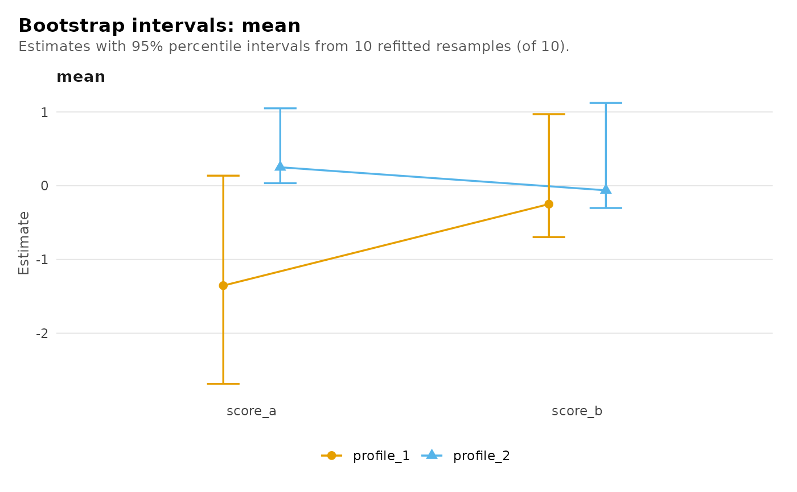

Standard errors, confidence intervals and tests for model parameters
Source:R/inference.R
parameter_inference.Rdparameter_inference() quantifies the sampling uncertainty of a fitted
model's estimates: indicator means, response probabilities, membership
coefficients or transition probabilities, according to the family. Wald
inference inverts an estimated information matrix for the covariance of
the estimates;
bootstrap inference resamples the independent units, refits, and reads
standard errors and percentile intervals off the replicates.
Wald tests are omitted where a test against zero makes no sense (probabilities, variances, count means), or a coordinate has zero estimated variance; bootstrap results carry no p-values. Inference is conditional on the specified model, including its number of classes, and does not account for having selected that model among candidates.
Arguments
- x
A converged fit from
multilpa(),lpa(),lca()ormultilca()(with or without covariates),lta(), the additive family or a growth mixture. An unconverged fit, or one with a parameter at a bound, is refused (boundarycan hold one kind of bound). A fit made withpriorhas no Wald inference, only the bootstrap; a fit with a noise component has neither. Mixture regressions carry their inference inget_results(x, "coefficients"),confint()andvcov(); the cross-level families have none.- data
Optional data frame the model was fitted to. When omitted it is rebuilt from what the fit stores; when supplied it is checked against the stored indicators and identifiers.
- level
Confidence level (default 0.95).
- step
Finite-difference step for the derivative of the analytic score (default
1e-4). Not used by the bootstrap.- vcov_type
Covariance estimator for the Wald method.
"observed"(default; a growth mixture defaults to the type it was fitted with) inverts the observed information."robust"is the sandwich over the independent units (groups), with theG / (G - 1)small-sample factor; it relaxes the within-group model, not the independence of groups."opg"inverts the outer product of the group scores. The last two need more groups than parameters. Wald inference for a fit with sampling weights, or with person centring or scaling, uses"robust"only. See Centred and scaled fits.- adjust
Multiplicity correction for
p_value, givingp_adjusted:"none"(default) or astats::p.adjust()method, taken over the tests the table reports.- method
"wald"(default) or"bootstrap". Both are available for all fourteen covariance structures, except that amultilpa_transitionsfit has Wald inference under EEI, VVI, EEE and VVV only. The bootstrap resamples the groups with replacement, refits within the same structure and realigns each replicate's labels to the original. It is not available for a covariate fit, an additive fit, or a fit with held measurement blocks other than afit_staged()result whose measurement was estimated from the same indicator observations. A separately supplied measurement from other data, or without stored data to establish its origin, cannot be resampled by this bootstrap.- iter
Number of bootstrap resamples (default 199, at least 2). A 95% percentile interval is more stable with 999 or more.
- n_starts, max_iter, tol
Passed to each bootstrap refit. The defaults shown are
multilpa()'s; a transition fit useslta()'s (max_iter = 5000,tol = 1e-10).- seed
Optional integer seed for the resampling; when given, the caller's random-number state is restored on exit. The Wald method uses no random numbers.
- boundary
What to do with categorical response probabilities at their lower bound (at or below
min_probability, or 1e-6 if that is larger), where the information is singular."error"(default) refuses the fit."fix"holds them at the bound and reports every other parameter conditional on them, as Mplus does. The held probabilities are left out of the table and named in thefixed_at_boundattribute; a covariate fit keeps their rows withNAstandard errors.
Value
A data frame with one row per reported parameter. For a profile,
class or covariate fit the columns are level ("measurement",
"profile" or "group"), outcome, term, parameter, estimate,
standard_error, statistic, p_value, p_adjusted, conf_low and
conf_high; the transition and growth-mixture tables are described in
their sections. Estimates are on the natural scale. A parameter whose
null value sits on the edge of its space (a variance, a covariance
diagonal, a probability, a count mean or dispersion) has NA test
columns but an interval. Wald intervals for probabilities are formed on
the logit scale and for variances, count means and dispersions on the
log scale, then back-transformed; every other interval is the estimate
plus or minus z standard errors. confint() returns the same
intervals. All class probabilities are reported, including the
reference category.
A fit made with fixed reports only the parameters it estimated;
standard errors are conditional on the held measurement and do not
include its uncertainty. For a fit_staged() result the bootstrap
refits both stages, so that uncertainty is propagated.
With method = "bootstrap" the table has the same columns and class
latents_bootstrap: estimate is the fitted value, standard_error the
standard deviation of the replicates, conf_low/conf_high the
percentile interval, the test columns NA.
as.data.frame(x, what = "replicates") returns the replicates (one row
per kept resample and parameter) and plot(x) draws each estimate with
its interval; n_valid and messages (why a resample was dropped) are
attributes.
For the Wald method on a profile or class fit, the attributes hold
covariance (returned by vcov()), fixed_at_bound, adjust and the
fit diagnostics (hessian, gradient, condition_ratio and others);
under "robust" or "opg" also group_scores and
scaling_correction, the MLR factor used by scaled likelihood-ratio
tests. The other families store fewer attributes.
Centred and scaled fits
Under centering = "grand" or scaling = "grand" the sample means and
standard deviations the indicators were transformed with are treated as
estimated jointly with the model, and their variability enters every
covariance type: a centred mean has the standard error of the difference
from the sample mean, not of the mean itself. Under "person"
transformations the observations within a unit become dependent, so only
the sandwich estimator, which aggregates scores at the unit level, applies.
A remaining score corresponding to more than one percent of a standard
error triggers a warning on both profile and covariate fits; refit with a
tighter tol before interpreting their Wald results.
Covariate fits
The table covers every free parameter at all three levels: the
measurement model, the profile logits and the group-class logits.
outcome is the profile or group class a coefficient predicts (or the
profile a measurement parameter belongs to) and parameter is "mean",
"variance", "covariance", "response" or "coefficient". A
categorical indicator contributes one "response" row per profile and
category, named indicator:category, with no test. Membership
coefficients are log odds against the last profile and the last group
class. A coefficient driven to the boundary by separation or an empty
class has no valid Wald test: a fit with a membership logit above 20 (a
slope per standard deviation of its covariate, the intercept at the
covariates' means) is refused, and the fit itself warns when it happens.
Only the Wald method is available for a covariate fit.
Transition fits
For an lta() fit the table covers the measurement model, the group-class
probabilities, each group class's initial distribution (parameter = "initial_probability", outcome the profile, term the group class) and
its transition matrix ("transition_probability", outcome the profile
moved to, term group_class_h:profile_j for the class and the profile
moved from). "robust" clusters on the sequences. The bootstrap resamples
sequences and matches each replicate's profiles and group classes to the
original's; it needs data. A transition row with no information (a
profile no unit occupies before its last occasion) is refused.
For a general transition fit (covariate, occasion-varying or second-order
transitions) the table has one row per transition, initial and
second-order logit: block, group_class, from, to, term, the
estimate columns, estimated and, for a second-order fit, previous.
estimated is FALSE for a logit the likelihood does not identify (see
Occasions without data under lta()); such a row has NA standard
error and test. The bootstrap rebases the initial logits when the
reference profile moves. A transition fit of either kind with a parameter
at a bound is refused under either boundary.
Growth mixtures
For a growth mixture (mixture_regression() with random) the table has
one row per natural parameter: block ("coefficient", "membership",
"group_membership" for a multilevel growth mixture, "residual_sd",
"random_variance", "random_sd", "random_correlation", "share"),
class ("all" for a quantity shared by every class), term and the
estimate columns. Intervals of standard deviations and variances are
formed on the log scale, of correlations on the Fisher scale and of shares
on the logit scale; only coefficients and logits are tested. The bootstrap
resamples persons and matches each replicate's classes to the original by
the posterior memberships of the original persons; it is unavailable for
a multilevel growth mixture. A degenerate random-effect covariance, a
residual standard deviation at its floor or a residual process on its
bound is refused under boundary = "error"; under "fix" those rows
have no standard error, test or interval. Weak class separation can make
Wald intervals inaccurate; the bootstrap is the alternative.
Conditions
Every refusal and warning is a classed condition; latents-conditions lists them. Bootstrap resamples that fail or do not converge are dropped with a warning saying how many; fewer than two usable resamples is an error.
Examples
set.seed(42)
example_data <- data.frame(
school = rep(seq_len(10), each = 10),
score_a = rnorm(100), score_b = rnorm(100)
)
fit <- multilpa(example_data, c("score_a", "score_b"), "school",
n_profiles = 2, n_group_classes = 1, n_starts = 2, seed = 1)
parameter_inference(fit)
#> level outcome term parameter estimate
#> 1 measurement profile_1 score_a mean 0.16571533
#> 2 measurement profile_1 score_b mean -0.07265950
#> 3 measurement profile_2 score_a mean -2.35097507
#> 4 measurement profile_2 score_b mean -0.35274803
#> 5 measurement profile_1 score_a variance 0.78583377
#> 6 measurement profile_1 score_b variance 0.71247734
#> 7 measurement profile_2 score_a variance 0.22400619
#> 8 measurement profile_2 score_b variance 2.46857665
#> 9 profile profile_1 group_class_1 probability 0.94707314
#> 10 profile profile_2 group_class_1 probability 0.05292686
#> 11 group group_class_1 <NA> probability 1.00000000
#> standard_error statistic p_value p_adjusted conf_low conf_high
#> 1 0.10689493 1.5502636 1.210782e-01 1.210782e-01 -0.04379489 0.3752255
#> 2 0.09183129 -0.7912281 4.288109e-01 4.288109e-01 -0.25264553 0.1073265
#> 3 0.38600600 -6.0905143 1.125485e-09 1.125485e-09 -3.10753293 -1.5944172
#> 4 0.79331210 -0.4446523 6.565711e-01 6.565711e-01 -1.90761117 1.2021151
#> 5 0.14706811 NA NA NA 0.54453908 1.1340503
#> 6 0.10798809 NA NA NA 0.52936710 0.9589262
#> 7 0.22275459 NA NA NA 0.03190175 1.5729162
#> 8 1.68018293 NA NA NA 0.65027166 9.3712690
#> 9 0.03537887 NA NA NA 0.81774059 0.9861813
#> 10 0.03537887 NA NA NA 0.01381871 0.1822594
#> 11 0.00000000 NA NA NA 1.00000000 1.0000000
# Apply Benjamini-Hochberg adjustment to the reported tests.
parameter_inference(fit, adjust = "BH")
#> level outcome term parameter estimate
#> 1 measurement profile_1 score_a mean 0.16571533
#> 2 measurement profile_1 score_b mean -0.07265950
#> 3 measurement profile_2 score_a mean -2.35097507
#> 4 measurement profile_2 score_b mean -0.35274803
#> 5 measurement profile_1 score_a variance 0.78583377
#> 6 measurement profile_1 score_b variance 0.71247734
#> 7 measurement profile_2 score_a variance 0.22400619
#> 8 measurement profile_2 score_b variance 2.46857665
#> 9 profile profile_1 group_class_1 probability 0.94707314
#> 10 profile profile_2 group_class_1 probability 0.05292686
#> 11 group group_class_1 <NA> probability 1.00000000
#> standard_error statistic p_value p_adjusted conf_low conf_high
#> 1 0.10689493 1.5502636 1.210782e-01 2.421565e-01 -0.04379489 0.3752255
#> 2 0.09183129 -0.7912281 4.288109e-01 5.717478e-01 -0.25264553 0.1073265
#> 3 0.38600600 -6.0905143 1.125485e-09 4.501941e-09 -3.10753293 -1.5944172
#> 4 0.79331210 -0.4446523 6.565711e-01 6.565711e-01 -1.90761117 1.2021151
#> 5 0.14706811 NA NA NA 0.54453908 1.1340503
#> 6 0.10798809 NA NA NA 0.52936710 0.9589262
#> 7 0.22275459 NA NA NA 0.03190175 1.5729162
#> 8 1.68018293 NA NA NA 0.65027166 9.3712690
#> 9 0.03537887 NA NA NA 0.81774059 0.9861813
#> 10 0.03537887 NA NA NA 0.01381871 0.1822594
#> 11 0.00000000 NA NA NA 1.00000000 1.0000000
# Wald inference for a VEI model with equal shape across profiles.
shaped <- multilpa(example_data, c("score_a", "score_b"), "school",
n_profiles = 2, n_group_classes = 1, n_starts = 2, seed = 1,
volume = "varying", shape = "equal", orientation = "axis")
parameter_inference(shaped)
#> level outcome term parameter estimate
#> 1 measurement profile_1 score_a mean -1.35412149
#> 2 measurement profile_1 score_b mean -0.24961049
#> 3 measurement profile_2 score_a mean 0.25022652
#> 4 measurement profile_2 score_b mean -0.06202866
#> 5 measurement profile_1 score_a variance 1.31232687
#> 6 measurement profile_1 score_b variance 1.32780761
#> 7 measurement profile_2 score_a variance 0.70077856
#> 8 measurement profile_2 score_b variance 0.70904523
#> 9 profile profile_1 group_class_1 probability 0.13570105
#> 10 profile profile_2 group_class_1 probability 0.86429895
#> 11 group group_class_1 <NA> probability 1.00000000
#> standard_error statistic p_value p_adjusted conf_low conf_high
#> 1 0.7248330 -1.8681841 0.06173642 0.06173642 -2.77476808 0.0665251
#> 2 0.4127571 -0.6047394 0.54535214 0.54535214 -1.05859949 0.5593785
#> 3 0.1335693 1.8733842 0.06101535 0.06101535 -0.01156440 0.5120174
#> 4 0.0987215 -0.6283197 0.52979456 0.52979456 -0.25551923 0.1314619
#> 5 0.6122361 NA NA NA 0.52593663 3.2745424
#> 6 0.4845408 NA NA NA 0.64940624 2.7149001
#> 7 0.1399720 NA NA NA 0.47376579 1.0365683
#> 8 0.1179509 NA NA NA 0.51177031 0.9823648
#> 9 0.1021789 NA NA NA 0.02768012 0.4640724
#> 10 0.1021789 NA NA NA 0.53592760 0.9723199
#> 11 0.0000000 NA NA NA 1.00000000 1.0000000
# Resample schools and refit the same covariance structure.
boot <- parameter_inference(shaped, method = "bootstrap", iter = 10,
n_starts = 1, seed = 1)
#> Warning: Profile 2: 3.0 Gaussian membership mass for 3 free means and variances. This is a conservative diagnostic, not an identification test; inspect the Gaussian covariance diagnostics.
boot
#> level outcome term parameter estimate
#> 1 measurement profile_1 score_a mean -1.35412149
#> 2 measurement profile_1 score_b mean -0.24961049
#> 3 measurement profile_2 score_a mean 0.25022652
#> 4 measurement profile_2 score_b mean -0.06202866
#> 5 measurement profile_1 score_a variance 1.31232687
#> 6 measurement profile_1 score_b variance 1.32780761
#> 7 measurement profile_2 score_a variance 0.70077856
#> 8 measurement profile_2 score_b variance 0.70904523
#> 9 profile profile_1 group_class_1 probability 0.13570105
#> 10 profile profile_2 group_class_1 probability 0.86429895
#> 11 group group_class_1 <NA> probability 1.00000000
#> standard_error statistic p_value p_adjusted conf_low conf_high
#> 1 1.0307711 NA NA NA -2.68649048 0.1362212
#> 2 0.5431321 NA NA NA -0.69622746 0.9699979
#> 3 0.3674272 NA NA NA 0.03449099 1.0492880
#> 4 0.4769342 NA NA NA -0.30187374 1.1224894
#> 5 0.5999731 NA NA NA 0.03880418 1.7156408
#> 6 0.5841342 NA NA NA 0.04243513 1.6602573
#> 7 0.2765998 NA NA NA 0.20977145 1.0503225
#> 8 0.2198904 NA NA NA 0.15764115 0.7748999
#> 9 0.2848955 NA NA NA 0.03177455 0.8379474
#> 10 0.2848955 NA NA NA 0.16205256 0.9682255
#> 11 0.0000000 NA NA NA 1.00000000 1.0000000
head(as.data.frame(boot, what = "replicates")) # one row per replicate
#> replicate level outcome term parameter estimate
#> 1 1 measurement profile_1 score_a mean -1.38513362
#> 2 1 measurement profile_1 score_b mean -0.15706260
#> 3 1 measurement profile_2 score_a mean 0.39818293
#> 4 1 measurement profile_2 score_b mean -0.06519831
#> 5 1 measurement profile_1 score_a variance 1.79757259
#> 6 1 measurement profile_1 score_b variance 1.66490432
if (requireNamespace("ggplot2", quietly = TRUE)) plot(boot, what = "mean")

# A covariate fit: membership driven by `x` and by the group's class.
set.seed(5)
school <- rep(seq_len(16), each = 8)
high_class <- rep(rep(c(FALSE, TRUE), length.out = 16), each = 8)
x <- rnorm(128)
profile <- ifelse(
runif(128) < plogis(-1 + 2 * high_class + 0.8 * x), 2L, 1L
)
covariate_data <- data.frame(
school = school, x = x,
y1 = rnorm(128, ifelse(profile == 2L, 2, -2), 0.7),
y2 = rnorm(128, ifelse(profile == 2L, 1.5, -1.5), 0.7)
)
covariate_fit <- multilpa(covariate_data, c("y1", "y2"), "school",
n_profiles = 2, n_group_classes = 2,
profile_covariates = "x", n_starts = 2, seed = 1)
parameter_inference(covariate_fit, covariate_data)
#> level outcome term parameter estimate
#> 1 measurement profile_1 y1 mean 1.9190929
#> 2 measurement profile_1 y2 mean 1.4517555
#> 3 measurement profile_2 y1 mean -1.8353900
#> 4 measurement profile_2 y2 mean -1.4838862
#> 5 measurement profile_1 y1 variance 0.3992639
#> 6 measurement profile_1 y2 variance 0.5601752
#> 7 measurement profile_2 y1 variance 0.4605175
#> 8 measurement profile_2 y2 variance 0.5202968
#> 9 profile profile_1 group_class_1 coefficient -0.7082123
#> 10 profile profile_1 group_class_2 coefficient 1.2934666
#> 11 profile profile_1 x coefficient 0.7401937
#> 12 group group_class_1 (Intercept) coefficient 0.2318526
#> standard_error statistic p_value p_adjusted conf_low conf_high
#> 1 0.07606996 25.227998 1.975161e-140 1.975161e-140 1.7699986 2.06818734
#> 2 0.09010398 16.112002 2.101105e-58 2.101105e-58 1.2751549 1.62835603
#> 3 0.08835082 -20.773888 7.457039e-96 7.457039e-96 -2.0085544 -1.66222558
#> 4 0.09390811 -15.801469 3.039500e-56 3.039500e-56 -1.6679427 -1.29982964
#> 5 0.06798158 NA NA NA 0.2859751 0.55743188
#> 6 0.09537546 NA NA NA 0.4012345 0.78207700
#> 7 0.08480659 NA NA NA 0.3209912 0.66069214
#> 8 0.09579579 NA NA NA 0.3626853 0.74640116
#> 9 0.33031825 -2.144030 3.203048e-02 3.203048e-02 -1.3556241 -0.06080037
#> 10 0.41632648 3.106856 1.890883e-03 1.890883e-03 0.4774817 2.10945146
#> 11 0.22710388 3.259274 1.116978e-03 1.116978e-03 0.2950783 1.18530914
#> 12 0.59791891 0.387766 6.981892e-01 6.981892e-01 -0.9400469 1.40375215
# Inference for a latent transition model, including transition probabilities.
moves <- lta(subset(course_engagement, student <= 40),
c("browse", "lectures", "forum_read"), "student",
n_profiles = 2, time = "sequence", n_starts = 2, seed = 1)
parameter_inference(moves)
#> level outcome term parameter
#> 1 measurement profile_1 browse mean
#> 2 measurement profile_1 lectures mean
#> 3 measurement profile_1 forum_read mean
#> 4 measurement profile_2 browse mean
#> 5 measurement profile_2 lectures mean
#> 6 measurement profile_2 forum_read mean
#> 7 measurement profile_1 browse variance
#> 8 measurement profile_1 lectures variance
#> 9 measurement profile_1 forum_read variance
#> 10 measurement profile_2 browse variance
#> 11 measurement profile_2 lectures variance
#> 12 measurement profile_2 forum_read variance
#> 13 group group_class_1 <NA> probability
#> 14 profile profile_1 group_class_1 initial_probability
#> 15 profile profile_2 group_class_1 initial_probability
#> 16 profile profile_1 group_class_1:profile_1 transition_probability
#> 17 profile profile_2 group_class_1:profile_1 transition_probability
#> 18 profile profile_1 group_class_1:profile_2 transition_probability
#> 19 profile profile_2 group_class_1:profile_2 transition_probability
#> estimate standard_error statistic p_value p_adjusted conf_low
#> 1 0.5552195 0.04015156 13.828093 1.725335e-43 1.725335e-43 0.4765239
#> 2 0.4372023 0.04891447 8.938097 3.959281e-19 3.959281e-19 0.3413317
#> 3 0.6089173 0.03909229 15.576403 1.053164e-54 1.053164e-54 0.5322979
#> 4 -0.8706368 0.05194461 -16.760870 4.716736e-63 4.716736e-63 -0.9724464
#> 5 -0.6264885 0.05713057 -10.965907 5.573909e-28 5.573909e-28 -0.7384623
#> 6 -0.9319820 0.04355621 -21.397222 1.418100e-101 1.418100e-101 -1.0173506
#> 7 0.5490715 0.04216225 NA NA NA 0.4723529
#> 8 0.8253244 0.06254078 NA NA NA 0.7114150
#> 9 0.4991643 0.03955397 NA NA NA 0.4273601
#> 10 0.4601888 0.04940225 NA NA NA 0.3728703
#> 11 0.5736161 0.06114138 NA NA NA 0.4654707
#> 12 0.3259595 0.03539718 NA NA NA 0.2634684
#> 13 1.0000000 0.00000000 NA NA NA 1.0000000
#> 14 0.7421425 0.07242582 NA NA NA 0.5781919
#> 15 0.2578575 0.07242582 NA NA NA 0.1419835
#> 16 0.8906184 0.01904205 NA NA NA 0.8473493
#> 17 0.1093816 0.01904205 NA NA NA 0.0772590
#> 18 0.1895947 0.03271108 NA NA NA 0.1335518
#> 19 0.8104053 0.03271108 NA NA NA 0.7379573
#> conf_high
#> 1 0.6339151
#> 2 0.5330729
#> 3 0.6855368
#> 4 -0.7688272
#> 5 -0.5145146
#> 6 -0.8466133
#> 7 0.6382505
#> 8 0.9574727
#> 9 0.5830329
#> 10 0.5679556
#> 11 0.7068876
#> 12 0.4032728
#> 13 1.0000000
#> 14 0.8580165
#> 15 0.4218081
#> 16 0.9227410
#> 17 0.1526507
#> 18 0.2620427
#> 19 0.8664482